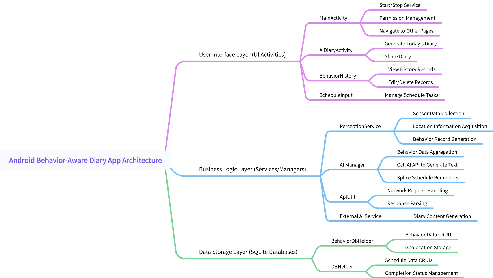
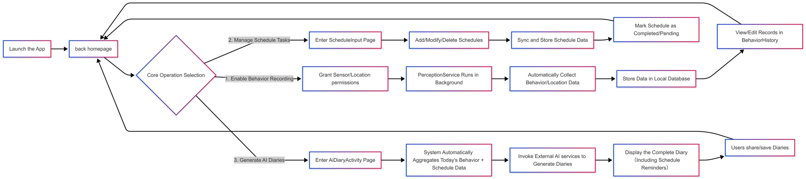

Challenge
Diary apps only know what users type. DailySense links what was planned (calendar) with what actually happened (sensors) to write a better daily summary.
Android team app · 2025
An Android app that combines phone-sensor activity tracking, a calendar and AI-generated daily diary entries.
Diary apps only know what users type. DailySense links what was planned (calendar) with what actually happened (sensors) to write a better daily summary.
Designed the full interface in Figma, built the calendar module, integrated it with teammates’ sensing and diary modules, and wrote the related report sections.
Calendar events now feed the diary generator. Team optimisations also cut daily battery use from 15–20% to 5–8%.


Architecture, calendar and integration; contributions in §2.5.
Credits: Team project. Activity sensing and AI diary generation were built by my teammates; the demo video was produced by the team.